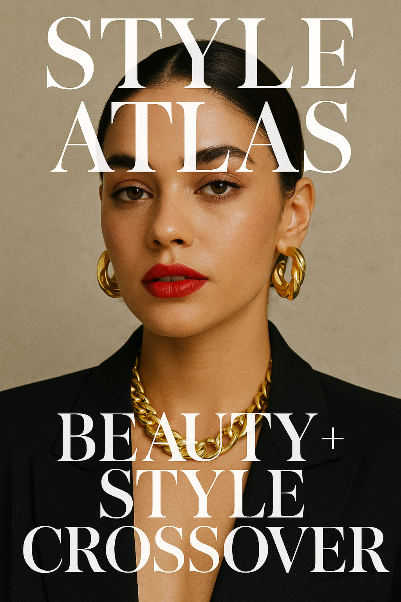
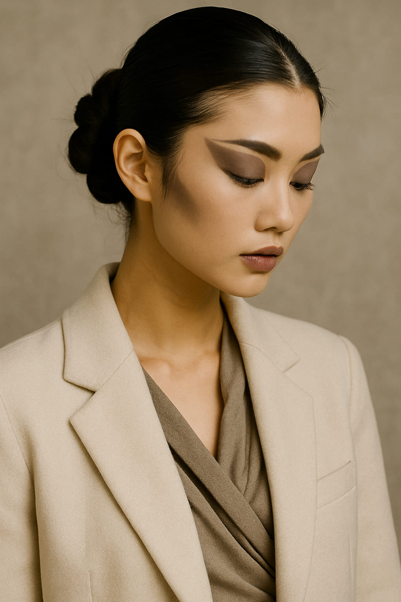
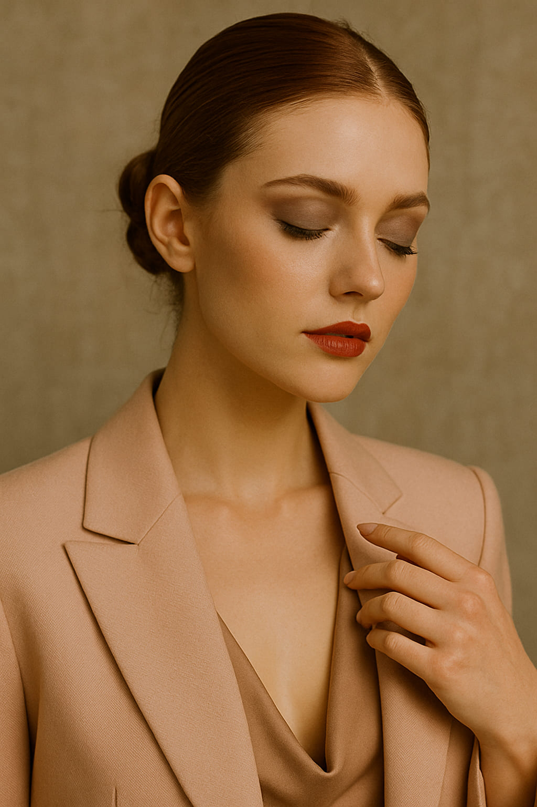

Beauty + Style Crossover: When the Face Becomes the Final Layer
Fashion is no longer just worn—it’s painted, sculpted, and glossed. Welcome to the era where beauty completes the outfit.
Once upon a time, style ended at the collar and beauty began above the brows. Now? The two are inseparable. In 2025, fashion and beauty have stopped orbiting each other—they’ve collided. The new visual culture is built on total look cohesion: lipstick matching knitwear, nails echoing heel hardware, blush lines tracing tailoring silhouettes.
"It’s not beauty trends or fashion trends anymore. It’s aesthetic language. Unified, visual, intentional." — Léna Motier, editor at *Culte* Paris
The New Visual Logic
Today’s stylists, makeup artists, and fashion editors aren’t working in silos. They speak a shared language of tone, mood, materiality. When brands present collections, the hair and makeup are no longer background—they're part of the thesis. Valentino's sculptural gowns now pair with chrome-painted lashes. Loewe's minimalist leather looks come with blurred lips and bare skin. A perfect manicure in 2025 is just as editorial as a runway dress.
Where Beauty Leads the Look
- Runways: At Isamaya Ffrench’s debut capsule, each outfit was designed around the eyeshadow—not the other way around.
- Pinterest: Boards titled “Makeup as Accessory” are trending globally. Users style lip color with outfit palettes, not skin tone.
- Campaigns: Jacquemus’ SS25 ads featured models in clay-covered skin, with fabric layered to mirror pigment texture.
When eyeliner matches drape, and color becomes architecture.
Beauty as a Styling Tool
Makeup artists are the new stylists. More and more editorial shoots begin with the face concept. Skin texture, tone blocking, or sculptural lashes often drive what the model wears—not the other way around. From metallic lips balancing latex corsets to neon blush setting off neutral streetwear, beauty is now a structure, not just a surface.
The Rise of Hair Architecture
Hair, too, has become a fashion instrument. In Copenhagen, shows featured models with sculpted buns that mimicked the silhouettes of their coats. In Tokyo, graphic braids extend the angles of tailoring. Even everyday stylists now talk in fashion terms: “collar framing,” “hemline balance,” “texture contrast.”
“In 2025, beauty is styling from the neck up.” — Misae Okuda, visual director, Tokyo
A coat isn't complete without a coordinated eye concept.
The Pinterest Effect
More than Instagram, Pinterest is where this crossover is thriving. Users build entire boards around “full look harmony.” Instead of separating makeup and outfits, pins blend tones, textures, and moods across all layers—skin, cloth, nail, hair. Trending searches include “style-led makeup,” “clothing and makeup palette sync,” and “color rhythm in full look.”
Minimalism Meets Maximal Detail
The visual direction of 2025 is not about excess—it’s about unity. A matte lip that mirrors shoe leather. Earrings that match brow tone. Eyeshadow that blends into the jacket’s seam line. It’s intimate maximalism. Every detail speaks. Nothing shouts.
The final accessory isn't worn—it's applied.
Microtrends Within the Crossover
- Hair/Outfit Mirroring: Updos that mimic pleats. Braids shaped like sleeve gathers.
- Chromatic Sync: Matching nail art to shirt print or eye shadow to knitwear.
- Beauty Mood Palettes: Building outfits based on skin finish (e.g. dewy = silk, velvet = powdery tones)
Editorial Looks That Got It Right
From the Margiela Artisanal show to local indie zines in Seoul, examples are everywhere:
- Blumarine x Isamaya: Glazed eyelids + satin corsets + peach-toned everything
- Fenty Skinwear Launch: A campaign styled around shimmer layering on cheekbones and fabrics
- Style Atlas Lookbooks: Use tone-matching across shadows, lashes, and textiles
Style is no longer pieced together—it’s blended into one story.
Final Thoughts
Beauty and fashion are no longer siblings—they’re one identity. In 2025, a strong look doesn’t just start with the outfit. It begins with the brush, the pigment, the shape of the brow. And when done right, the face isn’t just styled—it’s styled into the outfit.
Words by Style Atlas